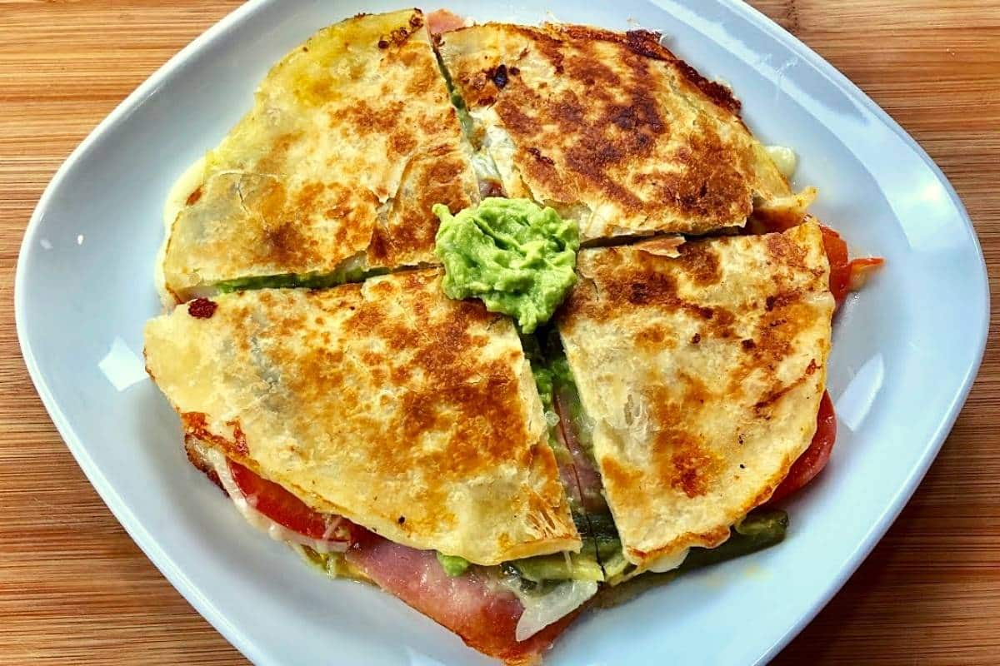

Sincronizadas with Salsa Verde

Description
Sincronizadas are a traditional Mexican dish made from flour tortillas
typically layered with cheese, ham, and veggies.
Ingredients
- 4 cloves of garlic
- 2-3 cups of shredded mozzarella
- 1lb of low sodium ham
- 2-3lbs of raw boneless chicken
- Salt to taste
- Pepper to taste
- 8 medium corn tortillas
- 10+ tomatillos
- 1 cup of oil
- 1/2 bottle of pre-made Salsa Verde
- 1 jalapeno